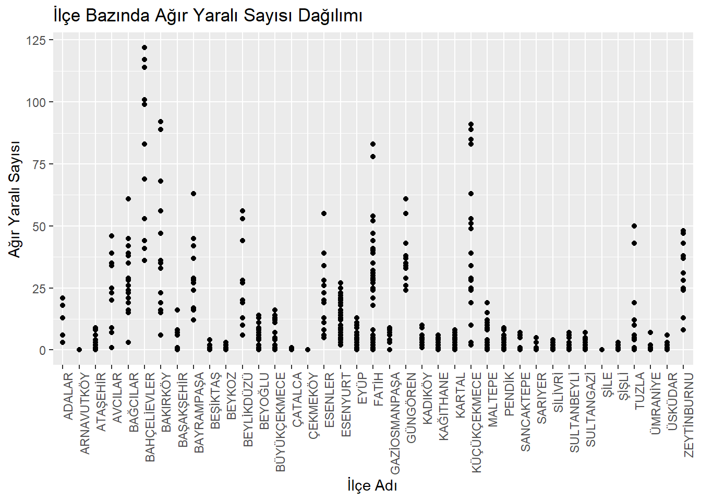
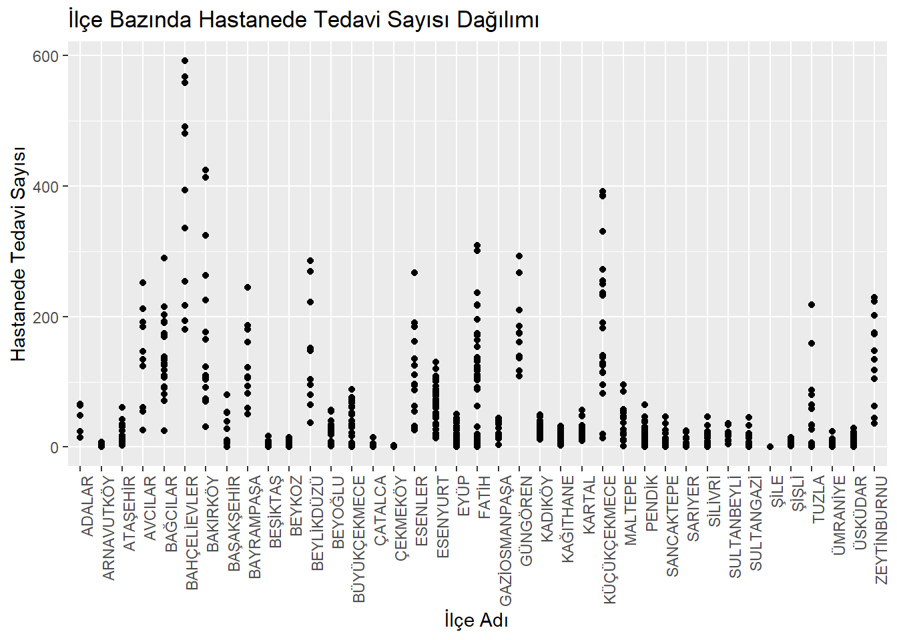
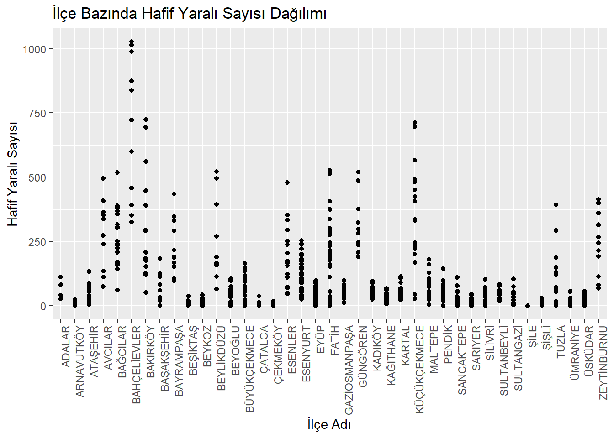
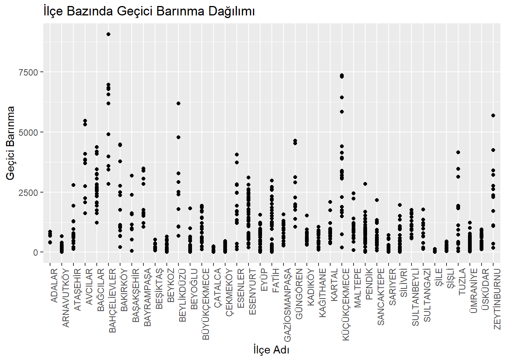
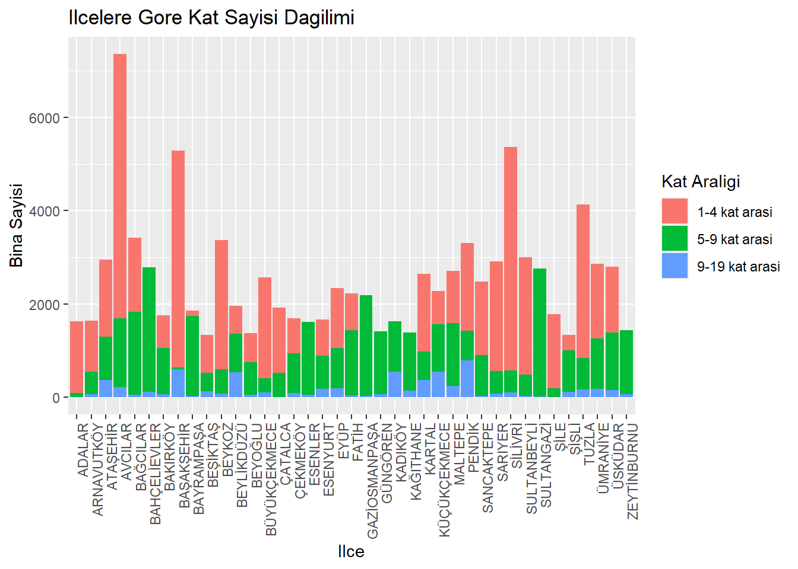
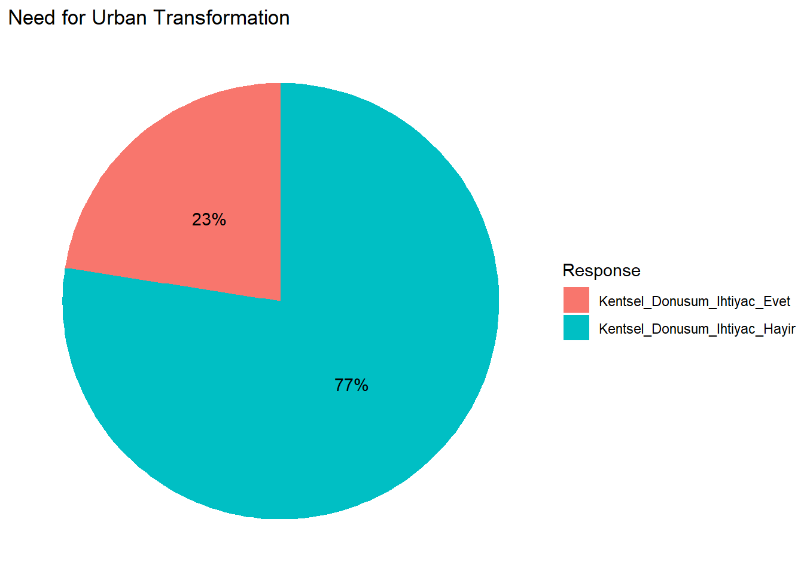

Keep an eye on this space to stay updated with my project activities.
1. Project Overview and Scope
Istanbul is the most populous city in Europe. Consequently, in the event of a disaster such as an earthquake, both the scale of potential damage and the demand for assistance would be substantial.
This project focuses on Istanbul, a city widely expected to experience a major earthquake and considerable damage. The objective is not only to analyze buildings and residential areas in terms of structural risk and provide district-level assessments, but also to examine the perceptions of residents living in Istanbul and to compare these findings with the analytical results.
To achieve this, four different datasets were utilized, and a variety of graphs were generated and interpreted in detail to derive meaningful insights.
Warning in Sys.setlocale("LC_CTYPE", "Turkish_Turkey.1254"): İşletim Sistemi
yereli "Turkish_Turkey.1254" e ayarlama isteğinin gerçekleştirelemeyeceğini
raporladı
[1] ""
Show Code
#setwd("C:/Users/Administrator/Documents/GitHub/emu660-spring2026-ecezcn")depremsenaryo <-read_excel("depremsenaryo.xlsx")mahbinasayi <-read_excel("mahbinasayi.xlsx")istanbuldepremverisi <-read_excel("istanbuldepremverisi.xlsx")belediyenufus <-read_excel("belediyenufus.xlsx")kentseldonusum <-read_excel("kentseldonusum.xlsx")save(depremsenaryo, mahbinasayi, istanbuldepremverisi, belediyenufus, kentseldonusum,file ="istanbul_deprem_verileri.RData")fix_text2 <-function(x) {if (!is.character(x)) return(x) x <-as.character(x) x <-iconv(x, from ="", to ="UTF-8", sub ="") x <-trimws(x) x}depremsenaryo[] <-lapply(depremsenaryo, fix_text2)mahbinasayi[] <-lapply(mahbinasayi, fix_text2)istanbuldepremverisi[] <-lapply(istanbuldepremverisi, fix_text2)belediyenufus[] <-lapply(belediyenufus, fix_text2)kentseldonusum[] <-lapply(kentseldonusum, fix_text2)str(depremsenaryo)
Deprem Senaryosu Analiz Sonuçları is a dataset that contains the results of an earthquake scenario analysis. Its columns mainly include information on the number of buildings by damage level, the number of people by vital status, and pipe damage.
İstanbul Çevresinde Gerçekleşen Depremler 2019-2020 is a dataset on earthquakes that occurred around Istanbul. Each row represents a single earthquake, and the columns provide various details about these events.
2017 Mahalle Bazlı Bina Sayıları is a dataset about buildings at the neighbourhood level. Each row represents a neighbourhood, and the columns mainly include information about the construction year of buildings and the number of floors.
2.3 Reason of Choice
Istanbul is widely regarded as a city facing a very high earthquake risk, with the potential for severe loss of life and property. Experts frequently warn in the media that a major earthquake, estimated to range between magnitudes 7.2 and 7.6, could strike the city. I chose to focus on this highly relevant issue in order to inform the public through a comprehensive analysis, raise awareness, and encourage precautionary measures that could help minimize the impact of such a disaster.
2.4 Preprocessing
There are 4 datasets which were downloaded from the sources mentioned in the section 2.1 Data Source. The .RData file can be downloaded to review.
3. Analysis
3.1 Exploratory Data Analysis
“depremsenaryo” analysis:
The analysis began with the “depremsenaryo” dataset.The top three districts in terms of “Loss of Life” are Bahçelievler, Bakırköy, and Küçükçekmece.
Bahçelievler, Bakırköy, Fatih and Küçükçekmece on the “Ağır Yaralı” plot,
Bahçelievler, Bakırköy and Küçükçekmece on the “Hastanede Tedavi” and “Hafif Yaralı” plot were attention-grabbing.
s2<-depremsenaryo%>%ggplot(aes(x=ilce_adi, y=agir_yarali_sayisi))+geom_point()+theme(axis.text.x=element_text(angle=90, hjust=1))+xlab("İlçe Adı")+ylab("Ağır Yaralı Sayısı")+labs(title="İlçe Bazında Ağır Yaralı Sayısı Dağılımı")s2

Show Code
s3<-depremsenaryo%>%ggplot(aes(x=ilce_adi, y=hastanede_tedavi_sayisi))+geom_point()+theme(axis.text.x=element_text(angle=90, hjust=1))+xlab("İlçe Adı")+ylab("Hastanede Tedavi Sayısı")+labs(title="İlçe Bazında Hastanede Tedavi Sayısı Dağılımı")s3

Show Code
s4<-depremsenaryo%>%ggplot(aes(x=ilce_adi, y=hafif_yarali_sayisi))+geom_point()+theme(axis.text.x=element_text(angle=90, hjust=1))+xlab("İlçe Adı")+ylab("Hafif Yaralı Sayısı")+labs(title="İlçe Bazında Hafif Yaralı Sayısı Dağılımı")s4

Show Code
p1<-depremsenaryo%>%ggplot(aes(x=ilce_adi, y=gecici_barinma))+geom_point()+theme(axis.text.x=element_text(angle=90, hjust=1))+xlab("İlçe Adı")+ylab("Geçici Barınma")+labs(title="İlçe Bazında Geçici Barınma Dağılımı")p1

The analysis continued with the “mahbinasayi” dataset, evaluating buildings based on their construction year and number of floors.
Although the data is based on neighborhoods, the analyses have been done based on districts.
Show Code
p2 <-ggplot(mahbinasayi, aes(x = ilce_adi)) +geom_col(aes(y =`1980_oncesi`, fill ="1980 Oncesi"),position ="dodge") +geom_col(aes(y =`1980-2000_arasi`, fill ="1980-2000 Arasi"),position ="dodge") +geom_col(aes(y =`2000_sonrasi`, fill ="2000 Sonrasi"),position ="dodge") +theme(axis.text.x =element_text(angle =90, hjust =1)) +xlab("Ilce") +ylab("Bina Sayisi") +labs(title ="Ilcelere Gore Bina Yasi Dagilimi", fill ="Bina Donemi")p2
“ilçe bazında kat sayısına göre bina sayıları”:
Show Code
p3 <-ggplot(mahbinasayi, aes(x = ilce_adi)) +geom_col(aes(y =`1-4 kat_arasi`, fill ="1-4 kat arasi"),position ="dodge") +geom_col(aes(y =`5-9 kat_arasi`, fill ="5-9 kat arasi"),position ="dodge") +geom_col(aes(y =`9-19 kat_arasi`, fill ="9-19 kat arasi"),position ="dodge") +theme(axis.text.x =element_text(angle =90, hjust =1)) +xlab("Ilce") +ylab("Bina Sayisi") +labs(title ="Ilcelere Gore Kat Sayisi Dagilimi", fill ="Kat Araligi")p3

belediyenufus analysis:
In the analysis of the “belediyenufus” dataset, municipalities have been ranked from highest to lowest population and it has been observed that the most crowded municipality is the Esenyurt Municipality.
oranlar_df <-data.frame(kategori =names(oranlar),oran =as.numeric(oranlar))p4_pie <-ggplot(oranlar_df, aes(x ="", y = oran, fill = kategori)) +geom_col(width =1) +coord_polar(theta ="y") +geom_text(aes(label =percent(oran)), position =position_stack(vjust =0.5)) +labs(title ="Need for Urban Transformation",fill ="Response" ) +theme_void()p4_pie

istanbuldepremverisi analysis:
Analyzing this dataset is essential for understanding earthquake activity and assessing potential risks. However, forecasting future earthquake magnitudes remains highly challenging, as earthquakes are inherently random and unpredictable.
As a result of these analyses, the districts that require the most urgent precautions, where the highest potential loss of life and property may occur, and where response efforts should be planned most carefully were identified as Fatih, Bağcılar, Pendik, Küçükçekmece, and Esenyurt. If the weights used to calculate the overall risk score are determined by experts, the results can be expected to be much more reliable and accurate.
4. Results and Key Takeaways
Istanbul is the most populous city in Europe, which means that in the event of a disaster such as an earthquake, both the scale of destruction and the demand for assistance would be extremely high.
The aim of this project is to examine structural vulnerability, make district-based assessments, and evaluate the views of people living in Istanbul.
Four datasets were used in this study, and a series of plots were produced and interpreted in detail.
This study identified the districts that are most likely to experience building and infrastructure damage in the event of an earthquake. In this way, it provides guidance on where aid should be directed, how it should be delivered, and to what extent support may be required.
Finally, this study serves both as a guide and as a means of encouraging society to be better prepared for such a disaster.
More specifically, the study has:
identified the areas most prone to earthquake risk and the districts most vulnerable, visualized these findings on maps, examined the condition of buildings and infrastructure in Istanbul.